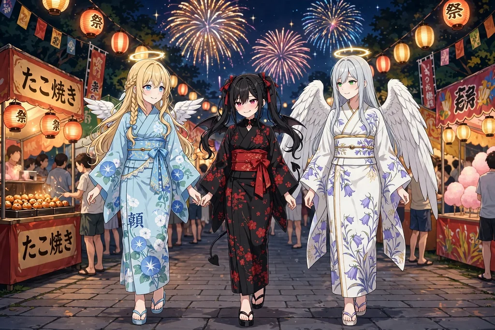
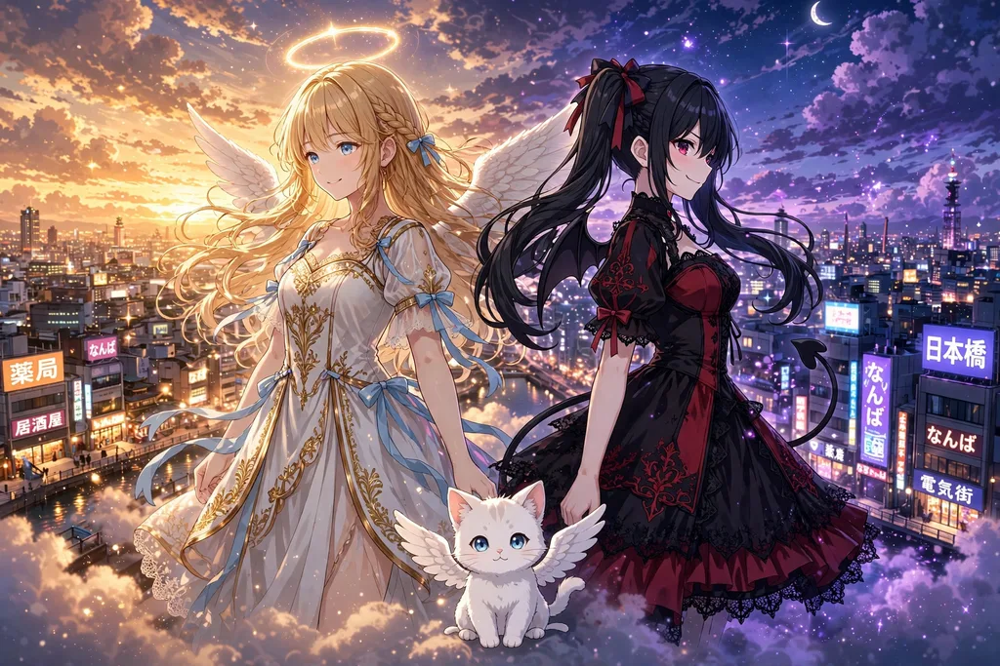
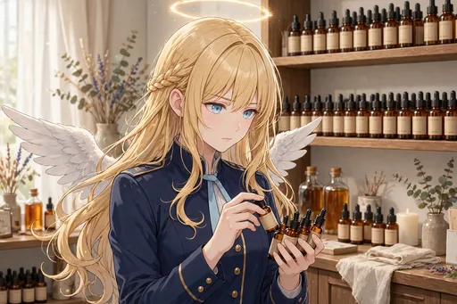

サービスシーン編（特集）
物語編とは別枠で、衣装と季節の場面だけを集めた特別編。全20枚。BOOTHにて販売準備中。
ガチャのカードの原画になった、高解像度イラストパックの紹介です。第1弾〜第12弾はすべてBOOTHショップ「angel222」にて販売中です（各500円）。各パックのページでは、ストーリー紹介と全場面の名前を紹介しています。別枠の「サービスシーン編」は全20枚の特集ページを用意しました（BOOTHにて販売準備中）。
迷ったら、物語の始まりの第1弾『降臨 〜日本橋に染まるまで』か、最新作の第12弾『メイドリフレ修行編』からどうぞ。どの弾もイラスト30点・500円です。

物語編とは別枠で、衣装と季節の場面だけを集めた特別編。全20枚。BOOTHにて販売準備中。

30点・500円
メイドリフレ店「てんしのたまご」での修行編。店長・橘 葵、先輩メイド・鈴原ことり、同期・早瀬りんが初登場する30場面。

30点・500円
今度はセラフィナが「先輩」になる番。後輩フィオレッタとフィギュア店員・二宮ゆかりが初登場する30場面。

30点・500円
クリスマスの日本橋を舞台にした、あたたかい冬の30枚です。

30点・500円
紅葉に染まる関西をめぐる、秋の旅の30枚です。

30点・500円
金の招待状から始まる、日本の神々・仏さまとのご近所づきあいを描く30枚です。

30点・500円
先輩天使ガブリエラ（銀髪ロング＋翠の瞳、大きな白い翼の正装姿）が、セラフィナの日本橋での暮らしぶりを視察に訪れる30枚です。

30点・500円
ライバルの悪魔ルチアが日本橋に降臨。

30点・500円
日本の暮らしにすっかり馴染んだ、生活者としての日常を描く30枚です。

30点・500円
セラフィナの「癒しのお仕事」の場面を集めた30枚です。

30点・500円
日本の四季と年中行事をめぐる30枚です。

30点・500円
日本橋のオタク文化にどっぷり浸かっていく30枚です。

30点・500円
約500年ぶりに大阪・日本橋へ降臨したセラフィナが、コンビニスイーツや回転寿司、メイドカフェ、深夜のガチャに触れて、現代文化に少しずつ染まっていく物語の始まりです。